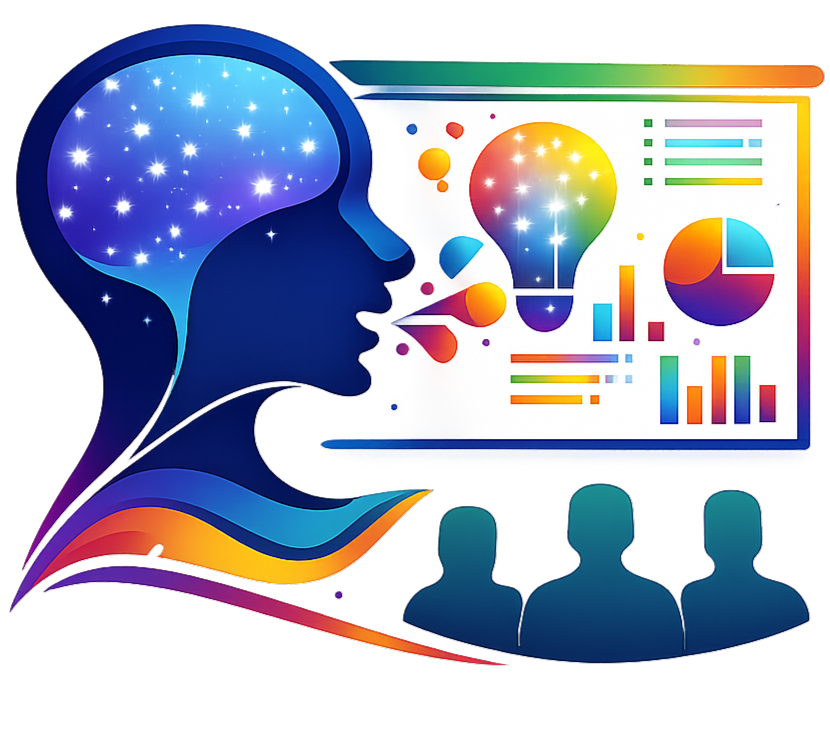

<!doctype html>
<html lang="en">
  <head>
    <meta charset="UTF-8" />
    <meta name="viewport" content="width=device-width, initial-scale=1.0" />
    <title>Footer Info | Sunesis</title>
    <link rel="icon" href="images/sunesisIcon.png" type="image/png" />
    <link rel="stylesheet" href="css/footer.css" />
  </head>
  <body>
    <div class="body-container">
      <section class="footer-info">
        <div class="footer-info-image">
          
        </div>
        <div class="footer-info-content">
          <h1 id="pageTitle">Sunesis</h1>
          <p id="pageIntro"></p>
          <div class="cta">
            <a class="primary" href="../index.html">Login or Register</a>
            <a class="secondary" href="account.html">Open Your Account</a>
          </div>
        </div>
      </section>

      <div id="contentCards"></div>

      <footer>
        <p>
          © 2026 Sunesis. A browser-first platform for learning and
          presentation.
        </p>
      </footer>
    </div>

    <script>
      const pages = {
        "platform-overview": {
          title: "Platform Overview",
          intro:
            "Sunesis is a browser-based learning and content presentation platform that turns structured knowledge into interactive slides and web-style content views. It helps learners, educators, and teams organize information clearly and access it in a simple, modern experience.",
          sections: [
            {
              heading: "What Sunesis does",
              paragraph:
                "Users can create accounts, build topics, add slides with text, images, and videos, and explore content in slide view or full web view. The platform is designed to make knowledge easy to follow and easy to manage for educational institutions and training teams.",
            },
            {
              heading: "Who it is for",
              items: [
                "Students and learners who need structured study paths.",
                "Educators and presenters creating clear content flow.",
                "Organizations that want a lightweight knowledge hub.",
              ],
            },
            {
              heading: "Why it matters",
              paragraph:
                "Sunesis turns structured information into clear, accessible learning experiences that feel modern and easy to navigate.",
            },
            {
              heading: "Key capabilities",
              items: [
                "Create and organize learning topics with ease.",
                "Present content in slide view or full web view.",
                "Search, manage, and revisit content from one place.",
              ],
            },
            {
              heading: "How it works",
              items: [
                "Register or log in to your Sunesis account.",
                "Browse available topics and slides.",
                "Create your own materials and manage them with clear permissions.",
              ],
            },
          ],
        },
        solutions: {
          title: "Solutions",
          intro:
            "Sunesis supports learners, educators, and teams looking for a clear way to share and explore knowledge.",
          sections: [
            {
              heading: "Built for practical use",
              items: [
                "Structured study paths for students and classrooms.",
                "Visual content presentations for educators and trainers.",
                "Simple knowledge hubs for organizations and communities.",
              ],
            },
          ],
        },
        "how-it-works": {
          title: "How It Works",
          intro:
            "The experience is designed to be approachable, with a simple flow from sign-in to creating and sharing content.",
          sections: [
            {
              heading: "The simple flow",
              items: [
                "Register or log in to your Sunesis account.",
                "Browse available topics and slides.",
                "Create your own materials and manage them with clear permissions.",
              ],
            },
          ],
        },
        "safety-approach": {
          title: "Safety Approach",
          intro:
            "Sunesis emphasizes secure access, clear permissions, and careful handling of user content.",
          sections: [
            {
              heading: "Security and trust",
              items: [
                "Protected account access with hashed credentials.",
                "Permission-based content management for safe collaboration.",
                "Reliable browser-based storage with a clear local-first approach.",
              ],
            },
          ],
        },
        "help-center": {
          title: "Help Center",
          intro:
            "Helpful guidance is available for getting started, managing topics, and navigating the platform.",
          sections: [
            {
              heading: "Support options",
              items: [
                "Step-by-step guidance for new users.",
                "Tips for creating slides and managing topics.",
                "Answers for common account and navigation questions.",
              ],
            },
          ],
        },
        guides: {
          title: "Guides",
          intro:
            "Explore practical guidance for using Sunesis in a smooth, confident way.",
          sections: [
            {
              heading: "What you will find",
              items: [
                "Quick-start guidance for first-time visitors.",
                "Best practices for organizing content.",
                "Reference ideas for building better presentations.",
              ],
            },
          ],
        },
        updates: {
          title: "Updates",
          intro:
            "Sunesis continues to grow with improvements to presentation, navigation, and content management.",
          sections: [
            {
              heading: "Recent focus areas",
              items: [
                "Better usability across the learning experience.",
                "More polished content views and navigation.",
                "Improved consistency between desktop and mobile use.",
              ],
            },
          ],
        },
        community: {
          title: "Community",
          intro:
            "Sunesis is built to support shared learning and collaborative knowledge sharing.",
          sections: [
            {
              heading: "Community value",
              items: [
                "Engage with content created by learners and educators.",
                "Discover new topics and presentations over time.",
                "Build a more connected knowledge experience together.",
              ],
            },
          ],
        },
        "privacy-policy": {
          title: "Privacy Policy",
          intro:
            "Sunesis is designed to keep user interactions simple while protecting the content and identity of each account.",
          sections: [
            {
              heading: "Privacy commitments",
              items: [
                "Local-first content storage for a lightweight experience.",
                "Secure account handling and role-based access.",
                "Respect for user privacy and clear, simple account use.",
              ],
            },
          ],
        },
        "terms-of-use": {
          title: "Terms of Use",
          intro:
            "These terms reflect a simple expectation for respectful and responsible platform use.",
          sections: [
            {
              heading: "Use expectations",
              items: [
                "Use Sunesis for learning, presentations, and knowledge sharing.",
                "Respect the content and permissions of other users.",
                "Keep your account and materials secure and appropriate.",
              ],
            },
          ],
        },
        cookies: {
          title: "Cookies",
          intro:
            "Sunesis uses browser-based features that may rely on local storage and session preferences to improve convenience.",
          sections: [
            {
              heading: "Browser preferences",
              items: [
                "Remember your login choice when selected.",
                "Keep your experience consistent across visits.",
                "Support the simple flow of local content and account access.",
              ],
            },
          ],
        },
        "data-protection": {
          title: "Data Protection",
          intro:
            "The platform is built with a clear focus on safe browser-based usage and thoughtful account handling.",
          sections: [
            {
              heading: "Data handling principles",
              items: [
                "Use browser storage for a lightweight experience.",
                "Maintain permission-based access to content.",
                "Protect account interactions with secure authentication measures.",
              ],
            },
          ],
        },
        "about-sunesis": {
          title: "About Sunesis",
          intro:
            "Sunesis is an intelligent knowledge presentation platform that turns structured information into usable content.",
          sections: [
            {
              heading: "Why Sunesis exists",
              items: [
                "To help make information easier to follow.",
                "To support learning, teaching, and content creation in one place.",
                "To keep the experience simple, polished, and access-friendly.",
              ],
            },
          ],
        },
        contact: {
          title: "Contact",
          intro:
            "Questions, feedback, or ideas can be shared through the Sunesis experience and its account flow.",
          sections: [
            {
              heading: "Reach out",
              items: [
                "Use the platform as a simple starting point for questions.",
                "Share ideas for new learning experiences and features.",
                "Continue the conversation through the Sunesis project workflow.",
              ],
            },
          ],
        },
        careers: {
          title: "Careers",
          intro:
            "Sunesis is a growing project for people interested in thoughtful digital learning and content design.",
          sections: [
            {
              heading: "Future opportunities",
              items: [
                "Design and product-minded contributors are welcome.",
                "Front-end and learning experience work is a natural fit.",
                "The platform continues to grow with new ideas and use cases.",
              ],
            },
          ],
        },
        partnerships: {
          title: "Partnerships",
          intro:
            "Sunesis can support collaborations where shared learning and clear presentation matter.",
          sections: [
            {
              heading: "Potential collaboration areas",
              items: [
                "Educational institutions and training teams.",
                "Content creators and digital learning partners.",
                "Organizations looking for lightweight knowledge sharing tools.",
              ],
            },
            {
              heading: "New heading addition",
              items: [
                "Additional new heading for collaboration.",
                "Checking to be sure the new box addition works.",
                "Organizations looking for lightweight knowledge sharing tools.",
              ],
            },
          ],
        },
      };

      const params = new URLSearchParams(window.location.search);
      const key = params.get("page");
      const page = pages[key];

      document.getElementById("pageTitle").textContent = page.title;
      document.getElementById("pageIntro").textContent = page.intro;

      const sections =
        Array.isArray(page?.sections) && page.sections.length > 0
          ? page.sections
          : [
              {
                heading: page?.heading || "Add a heading here",
                items: Array.isArray(page?.items) ? page.items : [],
              },
            ];

      const cardsContainer = document.getElementById("contentCards");
      cardsContainer.innerHTML = sections
        .map(({ heading, items, paragraph }) => {
          if (paragraph) {
            return `
              <section class="content-card">
                <h2>${heading}</h2>
                <p>${paragraph}</p>
              </section>
            `;
          }

          return `
            <section class="content-card">
              <h2>${heading}</h2>
              <ul>
                ${items.map((item) => `<li>${item}</li>`).join("")}
              </ul>
            </section>
          `;
        })
        .join("");
    </script>
  </body>
</html>
